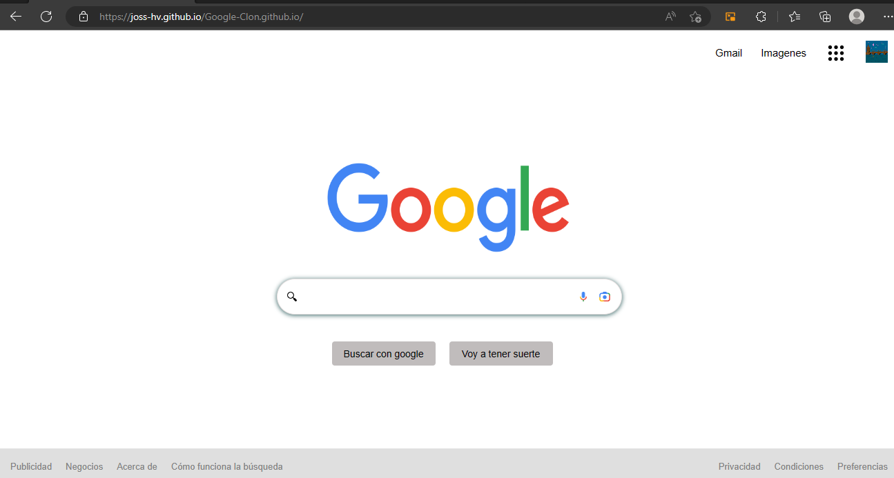

Mis proyectos recientes
Estos son algunos proyectos que he creado recientemente...


Actualmente soy estudiante universitaria de la licenciatura en biotecnología. A lo largo de la carrera he descubierto que la informática va de la mano con otras ciencias, por lo cual cada vez me ha interesado más el mundo de la programación. Tengo conocimientos en Python, R y softwares de modelado molecular y ahora estoy aprendiendo sobre desarrollo Front-end de páginas web con HTML y CSS.
Desarrollo Web
Desarrollo páginas web usando HTML5 y CSS3
Bioinformática
Desarrollo de programas aplicados en Biotecnología usando Python, así como modelado molecular de proteínas en Pymol y Chimera.
Estudiante
Me enfoco en los colores dorado, verde y rojo de la Biotecnología.

Se ha desarrollado de forma excelente sus habilidades como programadora de Front-End Junior, es una gran estudiante, muy dedicada y colaborativa. Estoy segura que será una gran adición a cualquier equipo.
Miranda Jaramillo
Software Engineer
Su pasión por el estudio y la mejora constante la convierte en una candidata excepcional. Además, es apta para el trabajo en equipo y demuestra seriedad en su labor. Destaca por su gran potencial en el área y su compromiso con el éxito. ¡No dudo que será un activo valioso para cualquier proyecto!
José Salazar
Sr. Android Engineer